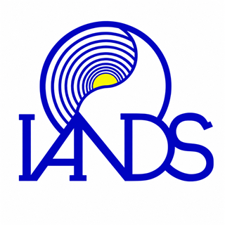

Article
The Qliphothic Interpretation of Near-Death Experiences: Light, Void, and Initiation
Journal of Near-Death Studies (forthcoming).
Most interpretations of near-death experiences (NDEs) privilege peaceful encounters with light but treat distressing, void-like, or hellish experiences as anomalies, pathology, or signs of spiritual failure. Empirical research does not support this moral distinction: Distressing NDEs form a stable portion of reported cases and show no consistent relation to moral character or religious belief. In this article, I develop a Qliphothic interpretation that maps NDEs as distinct threshold experiences. I read luminous NDEs as experiences of assimilative dissolution, void NDEs as encounters with groundlessness, and hellish NDEs as confrontations that expose vulnerabilities in the structure of the self. The model shifts attention from emotional tone to autonomy: The capacity to remain differentiated when ordinary bodily, moral, and narrative supports disappear. It offers a framework for interpreting the full range of NDEs without reducing distressing cases to punishment or error.
Main links